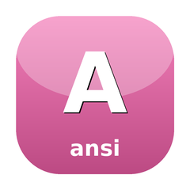

SugarAnsiParser
ANSI escape-sequence parser and state machine

Parse ANSI escape sequences into structured events (SGR attributes, cursor movement, erase operations, DEC private modes, OSC and DCS strings) without coupling the parser to any cell grid. sugar-ansi-parser is the VT500 byte-stream state machine behind sugar-vterm, extracted so other consumers can share it. It follows the Paul Williams DEC parser diagram and mirrors the parser side of charmbracelet/x/ansi.
Install
composer require sugarcraft/sugar-ansi-parserRequires PHP ^8.3. ext-mbstring is a suggestion, not a requirement: it is consulted only by the $replaceMalformed = true UTF-8 mode. Default parsing never touches it, and constructing the parser with that flag but without the extension fails at the constructor, not in the middle of a stream.
Quickstart
use SugarCraft\AnsiParser\Parser\{DebugHandler, Parser};
$handler = new DebugHandler(); // records every parse action
$parser = new Parser($handler);
// Chunks may split anywhere; in-flight sequences carry across feed() calls.
$parser->feed("\x1b[1;");
$parser->feed("31mHi\x1b[0m");
$parser->flush(); // end of stream: dispatches a pending string payload
$handler->filter('csi'); // two csi entries: params [1, 31] then [0], final 'm' (109)
$handler->filter('print'); // rows with detail 'H', 'i'To drive a cell grid, implement CsiHandler (cursor, erase, scroll, SGR, DEC modes) and OscHandler (title, hyperlink), then bridge them to the parser:
use SugarCraft\AnsiParser\Parser\{HandlerAdapter, Parser};
$parser = new Parser(new HandlerAdapter($myCsiHandler, $myOscHandler));
$parser->parseComplete($bytes); // feed() + flush() in one callConcepts
The parser is a state machine over bytes. It recognizes where a control sequence starts and ends, and it hands each complete piece to a handler as an event: a printed rune, a C0 control, a CSI or ESC dispatch, an OSC or DCS string. It does not decide what those events mean. Screen state, cell grids and cluster assembly belong to the consumer, which is why this package stops at abstract events.
There are two ways to consume events. A consumer that wants every byte-level event implements the seven-method Handler interface. A consumer that wants the cursor, erase, SGR and mode semantics implements CsiHandler and OscHandler and receives them through HandlerAdapter, which is a deliberate sieve: it passes only the events those interfaces describe, and a $fallback handler can take the rest.
Common tasks
Feed a stream in chunks. Sequences and UTF-8 runes split across feed() calls are reassembled. Call flush() once at the end so a pending string payload is dispatched:
$parser = new Parser($handler);
foreach ($chunks as $chunk) {
$parser->feed($chunk);
}
$parser->flush();Read colon-separated subparameters. CSI 4:3 m is curly underline, one slot with a subparameter, and it is not the same as CSI 4;3 m. subparams() reports which slots carry a colon, and groupSubparameters() regroups them. Read the flags inside csiDispatch(), where they describe the sequence being dispatched: the parser clears them when that dispatch returns, so a read after parseComplete() sees none.
use SugarCraft\AnsiParser\Parser\Parser;
// Call this from csiDispatch(), with its $params argument.
function groupedParams(Parser $parser, array $params): array
{
return Parser::groupSubparameters($params, $parser->subparams());
}
// CSI 4:3 m gives [[4, 3]]; CSI 4;3 m gives [[4], [3]].Decode an OSC 8 hyperlink. A hyperlink open carries a URI, and a close is an empty URI. HandlerAdapter reports both through OscHandler::hyperlink(), and it accepts the backtick-terminated form as well:
use SugarCraft\AnsiParser\Parser\{HandlerAdapter, Parser, RecordingOscHandler};
use SugarCraft\AnsiParser\Support\RecordingCsiHandler;
$csi = new RecordingCsiHandler();
$osc = new RecordingOscHandler();
$parser = new Parser(new HandlerAdapter($csi, $osc));
$parser->parseComplete("\x1b]8;;https://example.org\x1b\\link");
$osc->hyperlinkUri(); // https://example.org, read while the link is open
// A close (an empty URI) resets this to '', so read the URI before the close arrives.Bound a long-lived log. DebugHandler keeps an unbounded $log by default, which suits test fixtures. For a long-lived mirror, pass maxLogRows and the log keeps only the newest rows, counting evictions in $dropped. Trimming runs in batches, so the log can hold up to maxLogRows + min(4096, maxLogRows) rows before it trims back to maxLogRows:
$debug = new DebugHandler(maxLogRows: 500);
$parser = new Parser($debug);Decode an inline image payload. The codecs parse the payloads of DCS, iTerm2 OSC 1337 and Kitty APC sequences into typed objects, and they report malformed input instead of guessing:
use SugarCraft\AnsiParser\Codec\Iterm1337;
$file = Iterm1337::parse($payload); // ?Iterm1337, null when the payload is not OSC 1337
if ($file !== null && $file->isFile()) {
$declared = $file->declaredSize();
}What's in the box
Parser implements the Paul Williams DEC parser and dispatches abstract Handler events: printChar, execute, csiDispatch, escDispatch, oscDispatch, dcsDispatch and sosPmApcDispatch.feed(). flush() (or parseComplete()) settles a pending OSC, DCS, SOS, PM or APC string at end of stream. An in-flight CSI or ESC, and a half-finished DCS prelude, end undispatched.CsiHandler covers the renderer's working CSI set, plus CR and LF routed from C0 executes: CUU/CUD/CUF/CUB/CUP/HVP, ED/EL, SU/SD, IL/DL, ICH/DCH, REP, SCO save and restore, DECSET/DECRST, DECSTBM, TBC/CHT/CBT and SGR. HandlerAdapter translates parser events into these calls.subparams() and Parser::groupSubparameters() keep ECMA-48 colon groups apart, so CSI 4:3 m (curly underline) is not confused with CSI 4;3 m. Handlers can opt in through SubparamsAwareHandler.stringOverflowed() reports it for the dispatch that carries it.['type' => …, 'detail' => …] rows. Pass maxLogRows: for a long-lived mirror. filter($type) selects one kind, and resetLog() clears the rows and the eviction counter together.NullHandler consumes every event and does nothing. Its seven counter accessors, from printCount() to sosPmApcCount(), keep even a silent sink observable.Support\RecordingCsiHandler is a final recording double that ships in src/, so interface growth breaks it at compile time instead of silently drifting a hand-rolled stub. RecordingOscHandler stores the window title and tracks the current hyperlink pair.API reference
| Call | Signature | Description |
|---|---|---|
| Parser::__construct() | __construct(Handler $handler, bool $replaceMalformed = false, int $maxStringBuffer = 65536) | Constructs the state machine. The cap must be at least 1 byte. |
| Parser::feed() | feed(string $bytes): void | Stream input. Sequences split across calls are reassembled. |
| Parser::flush() | flush(): void | End-of-stream settlement of a pending string payload (OSC, DCS, SOS, PM or APC). |
| Parser::parseComplete() | parseComplete(string $bytes): void | feed() then flush() in one call. |
| Parser::reset() | reset(): void | Flush first: a pending OSC, DCS, SOS, PM or APC payload dispatches to the handler, then all state clears. To abandon a stream without that dispatch, call discard(). |
| Parser::discard() | discard(): void | Throw away pending payloads and in-progress UTF-8 without emitting them, then return to the ground state. |
| Parser::currentState() | currentState(): State | The current state of the 15-state machine. |
| Parser::subparams() | subparams(): array | Colon-structure flags for the current dispatch. Read them inside csiDispatch(). |
| Parser::groupSubparameters() | groupSubparameters(array $params, array $flags): array | Regroup parameters into nested lists using the colon flags. |
| Parser::stringOverflowed() | stringOverflowed(): bool | Whether the current string dispatch was truncated at the payload cap. |
| Parser::fastPathRuns() | fastPathRuns(): int | Internal counter that tests use to confirm the ground-state fast path ran. |
| Handler::printChar() | printChar(string $rune), execute(int $byte), csiDispatch(), escDispatch(), oscDispatch(), dcsDispatch(), sosPmApcDispatch() | The seven-method event interface. Every parser event reaches a consumer through these methods. |
| BulkPrintHandler::printRun() | printRun(string $run): void | Optional capability. A contiguous run of printable ASCII arrives as one call instead of one per byte. |
| SubparamsAwareHandler::setSubparams() | setSubparams(array $subparams): void | Optional capability. Receives the colon flags immediately before each CSI or DCS dispatch. |
| CsiHandler::printable() | 29 public methods, for example printable(), cuu(), cud(), sgr(), decset(), decrst(), gridRows(), gridCols() | The renderer-shaped CSI interface that HandlerAdapter calls. |
| OscHandler::title() | title(string $title): void, hyperlink(string $uri, string $id): void | Window title and OSC 8 hyperlink events. |
| HandlerAdapter::__construct() | __construct(CsiHandler $csi, OscHandler $osc, ?Handler $fallback = null) | Bridges parser events onto the CSI and OSC interfaces and sends the rest to the optional fallback. |
| HandlerAdapter::wired() | wired(CsiHandler $csi, OscHandler $osc, Handler $fallback): self | Named constructor that requires a fallback. |
| HandlerAdapter::withFallback() | withFallback(Handler $fallback): self | Return a new adapter with a different fallback. |
| DebugHandler::__construct() | __construct(?int $maxLogRows = null) | Records every event as a log row. Pass a cap for a keep-newest ring buffer. |
| DebugHandler::filter() | filter(string $type): array | Return the log rows of one event kind. |
| DebugHandler::resetLog() | resetLog(): void | Clear the rows and the eviction counter together. |
| NullHandler::printCount() | printCount(): int, executeCount(), csiCount(), escCount(), oscCount(), dcsCount(), sosPmApcCount(): int | A sink that does nothing, with seven event counters. |
| RecordingOscHandler::title() | title(string $title): void, hyperlink(string $uri, string $id): void | An OscHandler that records the title and the open hyperlink. |
| RecordingOscHandler::lastTitle() | lastTitle(): string, hyperlinkUri(): string, hyperlinkId(): string | Read back the recorded title and hyperlink pair. |
| AnsiTokenizer::new() | new(): self | A flat tokenizer that returns Token objects for a byte stream. |
| AnsiTokenizer::parse() | parse(string $chunk): array | Tokenize one chunk. Incomplete input waits for the next chunk. |
| AnsiTokenizer::pendingBytes() | pendingBytes(): int, flush(): array | Bytes held for the next chunk, and end-of-stream settlement. |
| Token::__construct() | type, data, intermediate, params, final, terminator, paramInts(): array | One classified slice of a stream. The type is one of the Token constants (TEXT, CSI, and so on). |
| Iterm1337::parse() | parse(string $data): ?self | Decode an iTerm2 OSC 1337 payload. Returns null when the payload is not OSC 1337. |
| Iterm1337::fromDcs() | fromDcs(int $final, string $data): ?self | Decode the same payload when it arrives inside a DCS string. |
| Iterm1337::isFile() | isFile(): bool, declaredSize(): ?int, malformed(): ?string, describe(): string | Inspect a decoded payload. File transfers report their declared size. A malformed payload reports why. |
| KittyApc::parse() | parse(string $data): ?self | Decode a Kitty graphics APC payload. |
| KittyApc::action() | action(): string, control(): array, imageId(): int, format(): ?int, isChunked(): bool | Read the control keys and the chunking state of a Kitty graphics command. |
| Dcs::parse() | parse(int $final, array $params = [], int $prefix = 0, int $intermediate = 0, string $data = ''): self | Decode and classify a DCS string. |
| Dcs::kind() | kind(): string, isSixel(): bool, isTruncated(): bool | The classification (for example sixel, xtversion, tmux) and the truncation flag. |
| KeySequence::encode() | encode(string $name): ?string | Map a key name to its byte sequence. Returns null for an unknown name. |
| KeySequence::names() | names(): array | Every key name that encode() accepts. |
| ControlNames::c0Name() | c0Name(int $byte): string, c1Name(int $byte): string, mnemonic(int $byte): ?string | The conventional name of a C0 or C1 control byte. |
| LabelSanitizer::clip() | clip(string $bytes, int $limit): string | Internal helper that clips a label to a byte limit. |
Only methods declared in sugar-ansi-parser/src, or inherited from a parent declared there, are listed. A type that extends a class outside that tree, such as \RuntimeException, does not show the methods of that class.
SugarCraft\AnsiParser
AnsiTokenizer final class
Stream tokenizer for terminal output bytes: raw bytes in, a list of Token records out.
| Method | Summary |
|---|---|
static new(): self | |
parse(string $chunk): array | Tokenize $chunk. Returns the tokens that are complete now; an unfinished trailing sequence is held for the next call. |
pendingBytes(): int | Number of bytes held from earlier parse() calls. Read-only: a caller that judges the cap on the whole buffer (held bytes plus the next chunk) needs the held length before it feeds the chunk. |
flush(): array | Return any held partial sequence as one TEXT token and clear the buffer. Call at end of stream so a stuck partial comes back as text rather than disappearing. |
Token final class
One classified slice of a byte stream, as emitted by AnsiTokenizer::parse().
| Method | Summary |
|---|---|
__construct(public readonly string $type, public readonly string $data = '', public readonly string $intermediate = '', public readonly string $params = '', public readonly string $final = '', public readonly string $terminator = '') | |
paramInts(): array | Parse $params as a semicolon-separated list of integers (CSI convention). An empty slot reads as 0. |
SugarCraft\AnsiParser\Codec
ControlNames final class
Names for the C0 (0x00-0x1F) and C1 (0x80-0x9F) control bytes.
| Method | Summary |
|---|---|
static c0Name(int $byte): string | Long label for a C0 byte; a non-C0 value reads as C0 0x<hex>. |
static c1Name(int $byte): string | Long label for a C1 byte; a non-C1 value reads as C1 0x<hex>. |
static mnemonic(int $byte): ?string | Bare abbreviation for a control byte (0x1B → ESC, 0x9B → CSI, 0x7F → DEL), or null when the byte is not a control byte. |
Dcs final class
Structured DCS decoder — the shared codec home for the sequence semantics a byte-stream inspector needs. The migration is landed: candy-ansi-inspect's Inspector::describeDcsParts() classifies through kind() and layers inspector-styled labels on top, while Inspector::describeDcs() survives only as a payload-string compatibility shim. Standing direction: new DCS sequence semantics belong here, consumed by the inspector — never hand-rolled a second time inside it.
| Method | Summary |
|---|---|
static parse(int $final, array $params = [], int $prefix = 0, int $intermediate = 0, string $data = ''): self | Decode one DCS dispatch. |
final(): int | |
params(): array | |
prefix(): int | |
intermediate(): int | |
data(): string | |
isTruncated(): bool | True when no final byte ever arrived (the final === 0 sentinel). |
isSixel(): bool | |
kind(): string | One of the KIND_* constants. The DECRQSS check runs before the sixel check because both share the final byte q — the $ intermediate is what separates the DECRQSS request from a DECSIXEL image. |
describe(): string | One-line, control-byte-safe summary. Payload bytes are attacker- controlled on an untrusted stream, so they are escaped rather than copied verbatim (same discipline as the inspector's label sanitizer). |
Iterm1337 final class
iTerm2 / WezTerm OSC 1337 inline-image decoder.
| Method | Summary |
|---|---|
static parse(string $data): ?self | Decode an OSC payload (the string oscDispatch() receives). Returns null when the payload is not a 1337 command. |
static fromDcs(int $final, string $data): ?self | Decode the DCS arm: a tmux passthrough envelope (ESC P tmux; … ESC \) carrying an OSC 1337. Returns null for any other DCS. |
command(): string | Verb before the first = (File, Pop, SetMark, …); '' for an empty body. |
isFile(): bool | |
isPop(): bool | |
args(): array | |
arg(string $key): ?string | |
name(): ?string | Original file name (name=), percent-decoded (+ kept verbatim); null when absent. |
declaredSize(): ?int | Declared file size in bytes (size=); null when absent or not a non-negative decimal. |
inline(): bool | inline=1 — render inline instead of saving to disk. Absent means 0. |
width(): ?string | Requested width (width=), verbatim: N, Npx or N%. |
height(): ?string | Requested height (height=), verbatim: N, Npx or N%. |
preserveAspectRatio(): ?bool | preserveAspectRatio=1|0; null when absent or not 1/0. |
type(): ?string | Payload container (type=tiff, …); absent means PNG (protocol default). |
payloadBase64(): string | Base64 payload that followed the : separator. |
payloadLength(): int | Length of the base64 payload in characters. |
estimatedBytes(): int | Decoded payload size without decoding it (base64 arithmetic). |
malformed(): ?string | Reason the wire form was malformed, or null when it parsed cleanly. |
describe(): string | One-line, control-byte-safe summary. The name is percent-decoded on the way in, so it is escaped here before reaching a terminal label. |
KeySequence final class
Key-name to wire-byte encoder: the twin of the parser's decode side.
| Method | Summary |
|---|---|
static encode(string $name): ?string | The wire bytes for a named key, or null when the name is unknown. |
static names(): array |
KittyApc final class
Kitty graphics APC decoder.
| Method | Summary |
|---|---|
static parse(string $data): ?self | Decode an APC payload. Returns null when the payload is not a kitty graphics frame (it must open with the G introducer). |
control(): array | |
get(string $key): ?string | |
action(): string | Action: T=transmit, p=place, d=delete, …; '' when absent. |
imageId(): int | Image id (i); 0 when absent (kitty treats 0 as "no id"). |
format(): ?int | Transmission format (f): 24=RGB, 32=RGBA, 100=PNG, …; null when absent. |
sourceWidth(): ?int | Source width in pixels (s). |
sourceHeight(): ?int | Source height in pixels (v). |
columns(): ?int | Target width in terminal cells (c). |
rows(): ?int | Target height in terminal cells (r). |
x(): ?int | Horizontal cell offset (x). |
y(): ?int | Vertical cell offset (y). |
z(): ?int | Z-index layer (z). |
more(): ?int | More chunks follow (m): 1 while a transmission is open, 0 on the last. |
isChunked(): bool | |
width(): ?int | Best-known pixel width: s, then the non-standard w alias, then the cell-width c (callers that need the unit should read the explicit accessors instead). |
height(): ?int | Best-known pixel height: v, then the non-standard h alias, then the cell-height r. |
payload(): string | Base64 payload that followed the ;. |
payloadSize(): int | Payload byte count — the label the inspector prints alone today. |
describe(): string | One-line, control-byte-safe summary: action/id, geometry (pixels when s/v are present, cells when only c/r are), offsets, layer and payload size. |
SugarCraft\AnsiParser\Parser
Action enum
VT500 ANSI parser actions.
Cases: None · Clear · Collect · Prefix · Dispatch · Execute · Start · Put · Param · Print
PHP also provides cases(), from() and tryFrom().
BulkPrintHandler interface
Opt-in capability: receive contiguous printable-ASCII runs from the Ground fast path as ONE printRun() call instead of one Handler::printChar() per byte (finding sugar-ansi-parser-002).
| Method | Summary |
|---|---|
printRun(string $run): void | A maximal contiguous run (length >= 1) of printable-ASCII bytes (0x20-0x7E) collected while in Ground, arriving at exactly the point where the equivalent per-byte printChar() calls would have occurred. |
printChar(string $rune): void | Print a single codepoint (one UTF-8 rune) to the current cursor cell. |
execute(int $byte): void | Execute a C0 or C1 control character (HT, LF, CR, BEL, BS, IND, RI, …). |
csiDispatch(int $final, array $params, int $prefix, int $intermediate): void | Dispatch a completed CSI sequence. |
escDispatch(int $final, int $intermediate): void | Dispatch a completed two-byte ESC sequence (e.g. ESC D = IND, ESC 7 = DECSC). |
oscDispatch(string $data): void | Dispatch a completed OSC sequence; data is everything between ESC ] and the terminator (BEL, ST, or ESC \). |
dcsDispatch(int $final, array $params, int $prefix, int $intermediate, string $data): void | Dispatch a completed DCS sequence. |
sosPmApcDispatch(string $kind, string $data): void | Dispatch a completed SOS, PM, or APC string. |
CsiHandler interface
Receives CSI (Control Sequence Introducer) dispatches from the parser.
| Method | Summary |
|---|---|
printable(string $rune): void | Print one character to the current cell. |
cuu(int $count): void | Cursor Up — move cursor up $count rows. |
cud(int $count): void | Cursor Down — move cursor down $count rows. |
cuf(int $count): void | Cursor Forward — move cursor right $count columns. |
cub(int $count): void | Cursor Back — move cursor left $count columns. |
cup(int $row, int $col): void | Cursor Position — move cursor to $row, $col (1-indexed). |
hvp(int $row, int $col): void | HVP — Horizontal and Vertical Position. Move cursor to $row, $col (1-indexed). Semantically identical to CUP; kept as a distinct method because upstream treats CSI f and CSI H as separate control functions. |
sgr(array $params): void | Select Graphic Rendition — set text attributes from $params. |
ed(int $mode): void | Erase Display — clear screen regions. |
el(int $mode): void | Erase Line — clear line regions. |
decset(int $mode, int $prefix): void | DECSET — DEC private mode set (prefix byte 0x3C-0x3F, e.g. '?'). |
decrst(int $mode, int $prefix): void | DECRST — DEC private mode reset. |
decstbm(int $top, int $bottom): void | DECSTBM — set top and bottom scroll region margins. |
tbc(int $mode): void | TBC — tab clear. |
cht(int $count = 1): void | CHT — Cursor Horizontal Tab. Moves the cursor forward $count tab stops. |
cbt(int $count = 1): void | CBT — Cursor Backward Tab. Moves the cursor back $count tab stops. |
cr(): void | CR — carriage return. Move the cursor to column 0 (row unchanged). |
lf(): void | LF — line feed. Advance the cursor down one row, scrolling the scroll region when already at the bottom margin. |
su(int $count = 1): void | SU — Scroll Up (CSI S). Scroll the scroll region up $count lines, introducing blank lines at the bottom. |
sd(int $count = 1): void | SD — Scroll Down (CSI T). Scroll the scroll region down $count lines, introducing blank lines at the top. |
il(int $count = 1): void | IL — Insert Line (CSI L). Insert $count blank lines at the cursor row, shifting existing lines down within the scroll region. |
dl(int $count = 1): void | DL — Delete Line (CSI M). Delete $count lines at the cursor row, shifting lines below up within the scroll region. |
ich(int $count = 1): void | ICH — Insert Character (CSI @). Insert $count blank cells at the cursor, shifting the rest of the line right. |
dch(int $count = 1): void | DCH — Delete Character (CSI P). Delete $count cells at the cursor, shifting the rest of the line left. |
rep(int $count = 1): void | REP — Repeat (CSI b). Repeat the last printed graphic character $count times. |
scosc(): void | SCOSC — SCO Save Cursor (CSI s). Save the current cursor position. |
scorc(): void | SCORC — SCO Restore Cursor (CSI u). Restore the saved cursor position. |
gridRows(): int | Number of rows in the cell grid (used as bottom-margin default). |
gridCols(): int | Number of columns in the cell grid. |
DebugHandler final class
Records every action dispatched by the parser as a flat log of ['type' => ..., 'detail' => ...] rows. Used in tests to assert the exact sequence of actions produced by feeding a byte stream.
| Method | Summary |
|---|---|
__construct(private readonly ?int $maxLogRows = null) | |
printChar(string $rune): void | |
execute(int $byte): void | |
csiDispatch(int $final, array $params, int $prefix, int $intermediate): void | |
escDispatch(int $final, int $intermediate): void | |
oscDispatch(string $data): void | |
dcsDispatch(int $final, array $params, int $prefix, int $intermediate, string $data): void | |
sosPmApcDispatch(string $kind, string $data): void | |
resetLog(): void | Forget everything: empty the log and zero the drop counter (the snapshot-and-clear the unbounded warning used to demand by hand). |
filter(string $type): array | Return only the entries of a given type. |
Handler interface
Receives actions from the VT500 parser state machine.
| Method | Summary |
|---|---|
printChar(string $rune): void | Print a single codepoint (one UTF-8 rune) to the current cursor cell. |
execute(int $byte): void | Execute a C0 or C1 control character (HT, LF, CR, BEL, BS, IND, RI, …). |
csiDispatch(int $final, array $params, int $prefix, int $intermediate): void | Dispatch a completed CSI sequence. |
escDispatch(int $final, int $intermediate): void | Dispatch a completed two-byte ESC sequence (e.g. ESC D = IND, ESC 7 = DECSC). |
oscDispatch(string $data): void | Dispatch a completed OSC sequence; data is everything between ESC ] and the terminator (BEL, ST, or ESC \). |
dcsDispatch(int $final, array $params, int $prefix, int $intermediate, string $data): void | Dispatch a completed DCS sequence. |
sosPmApcDispatch(string $kind, string $data): void | Dispatch a completed SOS, PM, or APC string. |
HandlerAdapter final class
Adapter bridging the Parser's Handler interface to CsiHandler + OscHandler.
| Method | Summary |
|---|---|
__construct(private readonly CsiHandler $csi, private readonly OscHandler $osc, private readonly ?Handler $fallback = null) | Construction-site note for finding sugar-ansi-parser-007: the three- argument shape is the safe one, but the $fallback stays optional for BC — built WITHOUT it the sieve's drops are silent, which is exactly the trap renderer bridges keep falling into. |
static wired(CsiHandler $csi, OscHandler $osc, Handler $fallback): self | Named constructor with a MANDATORY fallback — the compile-time refusal of the silent-drop shape (finding sugar-ansi-parser-007, arm a). The bare three-arg new remains for BC, but code that must observe the ESC family, DCS, SOS/PM/APC payloads, unmapped CSI finals and the non-routed executes can now say so at the call site instead of discovering the loss in a screenshot. |
withFallback(Handler $fallback): self | A NEW adapter whose sieve-unconsumed events route to $fallback, sharing this one's csi/osc sides (finding sugar-ansi-parser-007, arm b). The swap constructs rather than mutates — the adapter is stateless — so $this keeps its existing fallback (or silence) untouched. |
printChar(string $rune): void | |
printRun(string $run): void | |
execute(int $byte): void | |
csiDispatch(int $final, array $params, int $prefix, int $intermediate): void | |
escDispatch(int $final, int $intermediate): void | |
oscDispatch(string $data): void | |
dcsDispatch(int $final, array $params, int $prefix, int $intermediate, string $data): void | |
sosPmApcDispatch(string $kind, string $data): void |
NullHandler final class
A Handler that consumes everything and does nothing — the named destination for streams whose bytes must be parsed but not acted on (finding sugar-ansi-parser-005). Hand-rolled equivalents lurk in at least four consumer trees; shipping one honest copy replaces them.
| Method | Summary |
|---|---|
printChar(string $rune): void | |
execute(int $byte): void | |
csiDispatch(int $final, array $params, int $prefix, int $intermediate): void | |
escDispatch(int $final, int $intermediate): void | |
oscDispatch(string $data): void | |
dcsDispatch(int $final, array $params, int $prefix, int $intermediate, string $data): void | |
sosPmApcDispatch(string $kind, string $data): void | |
printCount(): int | |
executeCount(): int | |
csiCount(): int | |
escCount(): int | |
oscCount(): int | |
dcsCount(): int | |
sosPmApcCount(): int |
OscHandler interface
Receives OSC (Operating System Command) dispatches from the parser.
| Method | Summary |
|---|---|
title(string $title): void | Set the window title. |
hyperlink(string $uri, string $id): void | Open or close a hyperlink. |
Parser final class
VT500 ANSI parser state machine.
| Method | Summary |
|---|---|
__construct(private readonly Handler $handler, private readonly bool $replaceMalformed = false, private readonly int $maxStringBuffer = self::MAX_STRING_BUFFER) | |
feed(string $bytes): void | Feed a chunk of bytes through the state machine. Safe to call repeatedly; in-flight sequences carry across calls. |
parseComplete(string $bytes): void | Feed a complete byte sequence and guarantee end-of-stream flush. |
flush(): void | Force any in-flight string sequence (OSC/DCS/SOS/PM/APC) to dispatch with whatever payload has been collected, and return to ground. Useful at end-of-stream. |
reset(): void | Reset the parser to ground state. |
discard(): void | Abandon everything in flight WITHOUT dispatching: the anti-verb of reset(). |
subparams(): array | ECMA-48 sub-parameter continuation flags for the current (in-flight) or most recently dispatched CSI/DCS parameter list: true at index i means params[i] was followed by :, i.e. params[i + 1] belongs to the same parameter group. Indices beyond the last flag default to false — an empty result means the list held no : separators. |
static groupSubparameters(array $params, array $flags): array | Reconstitute ECMA-48 parameter groups from a flattened params list plus the subparams() continuation flags: each group is one parameter followed by its :-separated sub-parameters. CSI 4 : 3 m yields [[4, 3]] (one underline-style parameter) while CSI 4 ; 3 m yields [[4], [3]] (underline, then a separate SGR 3) — the distinction the flat list alone cannot express. |
stringOverflowed(): bool | Whether the string payload of the sequence CURRENTLY BEING DISPATCHED was clipped by the maxStringBuffer cap (finding sugar-ansi-parser-013, sap-06). Both collection routes set it — the per-byte put() drop and the bulk sweep's clipped run. |
RecordingOscHandler final class
Recording OSC sink: stores the window title and the currently-active OSC 8 hyperlink.
| Method | Summary |
|---|---|
title(string $title): void | |
hyperlink(string $uri, string $id): void | |
lastTitle(): string | |
hyperlinkUri(): string | URI of the currently-open hyperlink, or '' when none is open. |
hyperlinkId(): string | id= value of the currently-open hyperlink, or '' when none/unset. |
State enum
VT500 ANSI parser states.
Cases: Ground · CsiEntry · CsiIntermediate · CsiParam · DcsEntry · DcsIntermediate · DcsParam · DcsString · Escape · EscapeIntermediate · OscString · SosString · PmString · ApcString · Utf8
PHP also provides cases(), from() and tryFrom().
SubparamsAwareHandler interface
Opt-in declaration that a Handler reads ECMA-48 colon sub-parameters and wants the parser to PUSH them to it, instead of reaching back for them.
| Method | Summary |
|---|---|
setSubparams(array $subparams): void | Receive the sub-parameter continuation flags for the parameter list that is about to be dispatched. |
printChar(string $rune): void | Print a single codepoint (one UTF-8 rune) to the current cursor cell. |
execute(int $byte): void | Execute a C0 or C1 control character (HT, LF, CR, BEL, BS, IND, RI, …). |
csiDispatch(int $final, array $params, int $prefix, int $intermediate): void | Dispatch a completed CSI sequence. |
escDispatch(int $final, int $intermediate): void | Dispatch a completed two-byte ESC sequence (e.g. ESC D = IND, ESC 7 = DECSC). |
oscDispatch(string $data): void | Dispatch a completed OSC sequence; data is everything between ESC ] and the terminator (BEL, ST, or ESC \). |
dcsDispatch(int $final, array $params, int $prefix, int $intermediate, string $data): void | Dispatch a completed DCS sequence. |
sosPmApcDispatch(string $kind, string $data): void | Dispatch a completed SOS, PM, or APC string. |
Transitions final class
VT500 ANSI transition table.
| Method | Summary |
|---|---|
static lookup(int $state, int $byte): int | Look up the packed transition entry for a given state and byte. |
static action(int $entry): int | |
static nextState(int $entry): int | |
static terminators(int $state): string | The payload-sweep terminator set for one of the five string states (see self::$terminators). Only meaningful while the machine sits in a string state; any other state fails fast — a silently-empty set here would mean an unbounded bulk append past the sequence boundary. |
SugarCraft\AnsiParser\Support
RecordingCsiHandler final class
A recording CsiHandler test double that ships in src/ so any consumer can autoload it (finding sugar-ansi-parser-006) — the house published-shape precedent is sugar-testing, which ships ProgramSimulator and friends under its own src/ for exactly this reason.
| Method | Summary |
|---|---|
__construct(private readonly int $rows = 25, private readonly int $cols = 80, private readonly ?int $maxRows = null) | |
filter(string $type): array | Snapshot-style rows: filter('cuu') returns the matching subset, the same helper vocabulary as \SugarCraft\AnsiParser\Parser\DebugHandler::filter(). |
resetLog(): void | Empties the log and the drop counter (not the grid geometry). |
printable(string $rune): void | |
cuu(int $count): void | |
cud(int $count): void | |
cuf(int $count): void | |
cub(int $count): void | |
cup(int $row, int $col): void | |
hvp(int $row, int $col): void | |
sgr(array $params): void | |
ed(int $mode): void | |
el(int $mode): void | |
decset(int $mode, int $prefix): void | |
decrst(int $mode, int $prefix): void | |
decstbm(int $top, int $bottom): void | |
tbc(int $mode): void | |
cht(int $count = 1): void | |
cbt(int $count = 1): void | |
cr(): void | |
lf(): void | |
su(int $count = 1): void | |
sd(int $count = 1): void | |
il(int $count = 1): void | |
dl(int $count = 1): void | |
ich(int $count = 1): void | |
dch(int $count = 1): void | |
rep(int $count = 1): void | |
scosc(): void | |
scorc(): void | |
gridRows(): int | |
gridCols(): int |
Configuration and limits
The parser has no configuration file and no environment variables. Its options are constructor arguments and fixed limits:
| Option | Type | Default | Effect |
|---|---|---|---|
Parser $handler | Handler | required | Receives every event |
Parser $replaceMalformed | bool | false | Turns invalid or incomplete UTF-8 into U+FFFD. Requires ext-mbstring |
Parser $maxStringBuffer | int, at least 1 | 65536 bytes | Cap on one DCS, OSC, SOS, PM or APC payload. Excess bytes are dropped |
DebugHandler $maxLogRows | ?int | null, unbounded | Turns the log into a keep-newest ring, with evictions counted in $dropped |
HandlerAdapter $fallback | ?Handler | null | Receives the events the sieve does not consume |
Subparameters and multi-mode dispatch
ECMA-48 separates parameter slots with ; and subparameters with :. CSI 4:3 m is one slot with a subparameter, and CSI ? 1000 ; 1006 h sets two modes. The parser exposes both faithfully. subparams() returns, for each dispatch, a list of flags aligned with $params, with true at each index whose value was followed by a colon. The flags follow the upstream Go Param.HasMore design, so SGR consumers can handle colon forms such as 58:2::148:199:255 without re-splitting the stream.
HandlerAdapter dispatches every parameter of CSI h and CSI l as a separate decset() or decrst() call, preserving the prefix. The parser flags the colon structure but does not interpret it, so a handler that ignores subparams() keeps the semicolon-split view of $params.
Keys and key names
The parser does not read keys. It decodes bytes that a terminal sends. Codec\KeySequence works the other way: KeySequence::encode() maps a name such as Up, Tab or Enter to the bytes a terminal would send for it, and KeySequence::names() lists the names it knows. Unknown names return null.
use SugarCraft\AnsiParser\Codec\KeySequence;
KeySequence::encode('Up'); // "\x1b[A"
KeySequence::encode('Tab'); // "\t"
KeySequence::encode('Nope'); // nullTheming and styling
The parser has no theme and does not style anything. SGR attributes arrive as csiDispatch() events with their parameters, and the consumer decides what they look like. NullHandler and DebugHandler leave the bytes as they arrived.
Examples
examples/debug.php: walks one stream perHandlerevent family, covering print and CSI, execute, ESC, OSC, OSC 8 raw payloads, DCS, APC and the C1 introducers. It prints each event as the parser reports it.examples/adapter.php: drivesHandlerAdapteritself. It shows the DECSET fan-out, the OSC 8 open and close pair, and the sieve with and without its$fallback.
php examples/debug.php
php examples/adapter.phpTesting
Run the suite from the library root with PHPUnit 10:
cd sugar-ansi-parser && composer install && vendor/bin/phpunitThe tests are organized by component. ParserTest.php and TransitionsTest.php cover the state machine, HandlerAdapterTest.php, HandlerAdapterModeDispatchTest.php and HandlerAdapterFallbackTest.php cover the adapter, SgrSubparameterTest.php covers colon forms, and ParserOverflowTest.php and DcsTruncationTest.php pin the payload caps. The Codec/ directory holds the decoder tests.
Troubleshooting
| Symptom | Cause and fix |
|---|---|
| An incomplete CSI or ESC at the end of the stream never dispatches | flush() and parseComplete() settle only string payloads. A CSI or ESC with no final byte cannot be recovered, so it ends undispatched. A complete sequence dispatches on its final byte, so a trailing SGR reset is not lost. Make sure the producer sends complete sequences. |
| An OSC or DCS payload arrives truncated | Payloads cap at 64 KiB by default. Call stringOverflowed() inside the dispatch to detect the cut, or raise the cap with the third constructor argument. |
| Invalid UTF-8 causes an error or a garbled rune | Pass replaceMalformed: true to turn malformed sequences into U+FFFD. The flag needs ext-mbstring, and the constructor fails loudly when the extension is missing. |
| A fallback handler receives no events for the ESC family, DCS, SOS, PM or APC | HandlerAdapter consumes the events it maps, and consumes the HT, LF, CR and BS executes. It forwards ESC, DCS, SOS, PM and APC events to $fallback unchanged, so pass a fallback to see them, or implement Handler directly. |
| Colon-separated color arguments arrive as separate values | The parser flags the structure but does not interpret it. Read subparams() during the dispatch, or implement SubparamsAwareHandler. groupSubparameters() regroups them. |
A DebugHandler log grows without bound | The default log is unbounded, which suits fixtures. Pass maxLogRows for a long-lived mirror. |
Limits and hostile input
The parser is built for untrusted byte streams. Its bounds are part of the product. Payloads are capped as described above, so a hostile stream cannot grow the buffers without limit. The codecs report malformed input instead of guessing. Dropped bytes are signaled, not silent: the overflow flag, the truncation flags on the codecs, and the $dropped counter of a bounded DebugHandler all say when information was lost.
Architecture
bytes
|
v
Parser (VT500 state machine, Transitions table, State enum)
| printChar / execute / csiDispatch / escDispatch / oscDispatch / dcsDispatch / sosPmApcDispatch
v
Handler ----- implement it directly, e.g. DebugHandler, NullHandler
|
v
HandlerAdapter (sieve) ---> CsiHandler (29 methods), OscHandler (title, hyperlink)
|
+---> $fallback Handler (receives what the sieve does not consume)
Codec\ Iterm1337, KittyApc, Dcs, KeySequence, ControlNames, LabelSanitizer
AnsiTokenizer a flat tokenizer for consumers that want Token objects rather than eventsUpstream mapping
| Charmbracelet source | SugarCraft port | Notes |
|---|---|---|
charmbracelet/x/ansi | Parser, CsiHandler, SubparamsAwareHandler | The parser side of the design. The Param.HasMore side-channel is the model for subparams() |
| Paul Williams, DEC parser state diagram | Parser, Transitions, State | The 15-state VT500 machine. The transition table is a 4096-byte lookup built at first use, indexed by state and byte |
Where the port deliberately diverges, the reason is in the library README under the Credits and inspiration section.
Changelog and versioning
The library has no separate changelog file yet. Its history is the commit log of sugar-ansi-parser/ in detain/sugarcraft. The package was renamed from sugarcraft/candy-ansi in 2026-10. Depend on the new name only.
Source & demos
Related
- SugarVterm: the emulator that consumes this parser through its renderer handler.
- SugarCellbuffer: the immutable cell-grid model. The parser itself has no grid.
- SugarPty: a PTY library whose output this parser consumes.